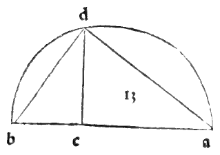

CAPITOLO XXV¶
Commo non possino essere più. 5. corpi regulari.

Conuiense ora mostrare commo non possino essere pin de 5 tali corpi in natura cioè tutte lor basi sieno équalli fra loro ede angoli solidi e piani equali e similmente de lati equali la qual cosa cosi apare peroche ala constitutione de vno angulo solido almanco e necessario el concorso de 3 anguli superficiali perche solo de doi anguli superficiali non se pò finire vn angol solido. Onde per che li 3 anguli de caduno exagono equilatero sonno equali a anguli recti.
E ancora delo eptagono cioè figura de 7 lati e generalmente de caduna figura de più lati equilatera e anco equangula li 3 suoi anguU sempre sonno magiori de 4 recti si commo per la 32. del primo euidentamente apare e caduno angulo solido e menore de 4 anguli recti commo testifica la 21. del II. E pero fìa impossibile che 3 anguli de lo exagono e de lo eptagono e generalmente de qualunche figura de più lati equilatera e ancora equiangula formino vn angol solido. E per questo se manifesta che ninna figura solida equilatera e di anguli equali non si pò formare de superficie exagonali o veramente de più lati.
Pero che se li 3 angoli de lo exagono equilatero e anco equiangulo sonno magiori che vn angolo solido, sequita che 4. e più molto magiormente excederano dicto angulo solido. Mali 3 angoli del pentagono equilatero e anco equiangolo e manifesto che sonno menori de 4 angoli recti. E li quatro sonno magiori de 4 recti. Onde de li 3 anguli de vn pentagono equilatero e anco equiangulo se pò formare langulo solido. Ma de li suoi 4 anguli o de più non e possibile a formare angulo solido.
E pero solamente vn corpo de pentagoni equilateri e anco equianguli fia formato, el qual e dicto duodecedron altramente corpo de 12 pentagoni, E pero solamente vn corpo de pentagoni equilateri e anco equiangoli fia formato el quale dicto duodecedron altramente corpo de 12 pentagoni dali philosophi. Nel quale li anguli deli pentagoni a 3 a 3 formano e contengano tutti li anguli solidi de dicto corpo. La medesima ragione fia in le figure quadrilatere de lati e anguli equali: commo in li pentagoni se dicto. Peroche ogni figura quadrilatera se la sira equilatera e anco de angoli equali quella per la diffinitìone sira quadrata, perche tutti li suoi anguli siranno recti commo se mostra per la 32 del primo.
Onde de 3 angoli adonca de tal figura superficiale fia possibile formare vnangol solido. Ma de 4 suoi e de più e impossibile. Per laqual cosa de tali figure superficiali lequali conciosiacosa che le sienno quadrilatere equilatere e de angoli equali sene pò formare vn solido el quale noi chiamamo cubo elquale e vn corpo contenuto da 6 superficie quadrate e ha 12 lati e 8 angoli solidi. E deli triangoli equilateri li 6 angofi sonno equali a 4 recti per dieta 32. del primo. Adonca manco de 6 sonno menori de 4 recti, e più de 6 sonno magiori de 4 recti.
E pero de 6 angoli e de più de simili triangoli non se pò formare vnangolo solido, ma de 5. e de 4. e de 3. se pò formare. E conciosia che 3 angoli del triangolo equilatero contenghino vnangol solido pero de triangoli equilateri se forma el corpo de 4 basi triangulari de lati equali dicto tetracedron, E quando concorgano 4 tali triangoli se forma el corpo de 8 basi detto octocedron. E se 5 triangoli equilateri contengano vnangol solido alor se forma el corpo detto ycocedron de 20 basi triangulari e de lati equali.
Onde perche sienno tanti e tali li corpi regulari e perche ancora non sienno più per quel che dicto habiamo a pieno fia manifesto etc.
Marginal Woodcut Diagrams (Paganini 1509)¶

Folio 0032 Diagram 1¶